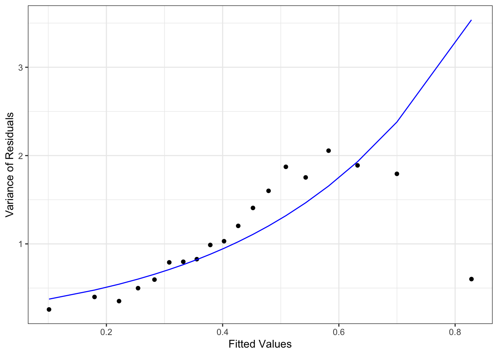
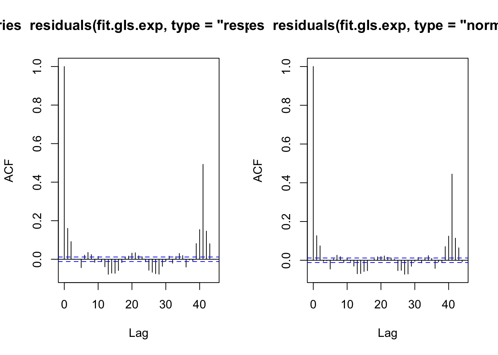
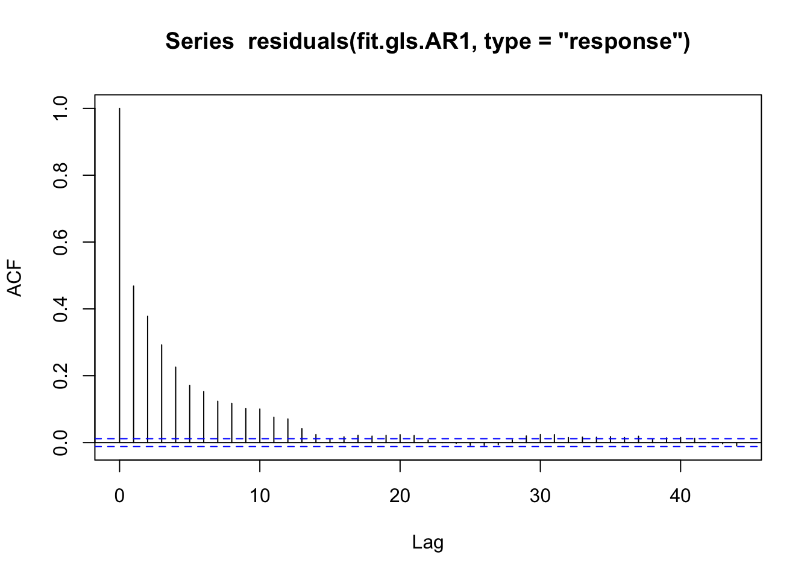
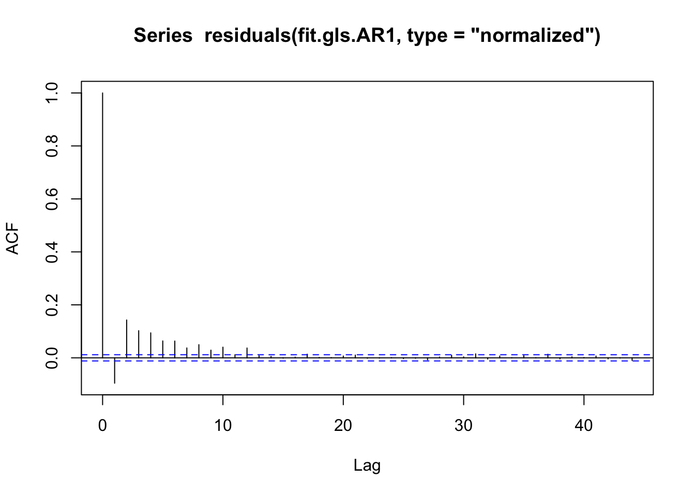
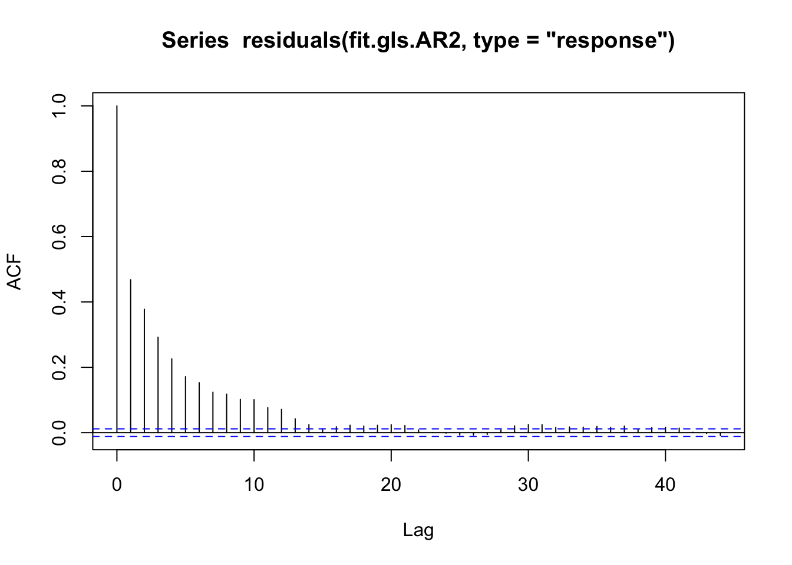
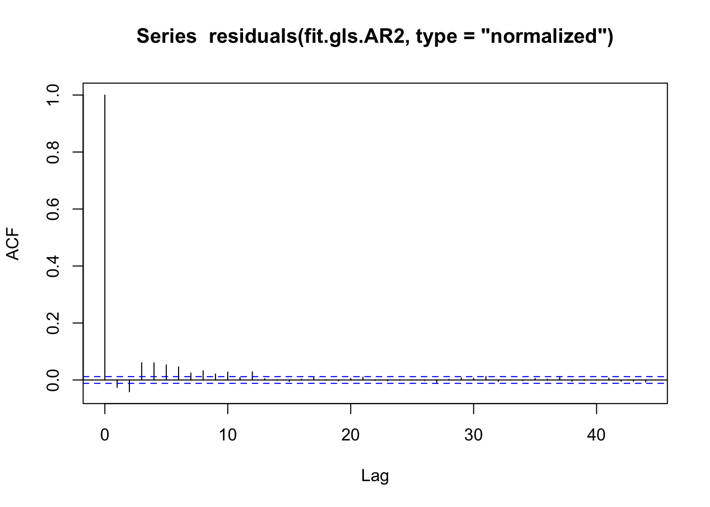

library(tidyverse)
library(gridExtra)
library(fields)
library(asbio)Warning in fun(libname, pkgname): couldn't connect to display
"/private/tmp/com.apple.launchd.AecgpXBenf/org.xquartz:0"library(MuMIn)
library(regclass)library(tidyverse)
library(gridExtra)
library(fields)
library(asbio)Warning in fun(libname, pkgname): couldn't connect to display
"/private/tmp/com.apple.launchd.AecgpXBenf/org.xquartz:0"library(MuMIn)
library(regclass)EIA <- read_csv("EIA.csv")Rows: 27798 Columns: 12
── Column specification ────────────────────────────────────────────────────────
Delimiter: ","
chr (2): tidestate, GridCode
dbl (10): x.pos, y.pos, area, observationhour, Year, DayOfMonth, MonthOfYear...
ℹ Use `spec()` to retrieve the full column specification for this data.
ℹ Specify the column types or set `show_col_types = FALSE` to quiet this message.EIA <- EIA |>
mutate(tidestate = as.factor(tidestate),
density = count/area)# # first group the data by gridcodes and find the mean density for each cell
# newdata <- group_by(EIA, GridCode) |>
# summarise(x.pos = first(x.pos),
# y.pos = first(y.pos),
# area = first(area),
# density = mean(density))
#
# # pick a nice colour scheme
# col <- colorRampPalette(rev(rgb(c(231,117,27),
# c(41,112,158),
# c(138,179,119),
# max = 255)))(100)
#
# # plot the data
# p <- ggplot(newdata)
# p <- p +
# geom_tile(aes(x = x.pos, y = y.pos, fill = density,
# height = 1000, width = 1000)) +
# scale_fill_gradientn(colours = col, space = "Lab",
# na.value = "grey50", guide = "colourbar")
# p + theme_bw() + coord_equal()Checking linearity:
exploratory plots
# EIA |>
# ggplot(aes(x = density)) +
# geom_histogram(binwidth = 5) +
# facet_grid(~ tidestate) +
# theme_bw() +
# labs(x = "Tide State", y = "Density")
#
# EIA|>
# ggplot(aes(y = density, x = observationhour)) +
# geom_point() +
# theme_bw() +
# labs(x = "Observation Hour", y = "Density") +
# scale_x_continuous(breaks = seq(0, 24, 1))
#
# EIA|>
# ggplot(aes(y = density, x = DayOfMonth)) +
# geom_point() +
# theme_bw() +
# labs(x = "Day of Month", y = "Density") +
# scale_x_continuous(breaks = seq(1, 31, 3))
#
# EIA|>
# ggplot(aes(y = density, x = MonthOfYear)) +
# geom_point() +
# theme_bw() +
# labs(x = "Month of Year", y = "Density") +
# scale_x_continuous(breaks = seq(1, 12, 1))
#
# EIA|>
# ggplot(aes(x = density)) +
# geom_histogram(binwidth = 5) +
# facet_grid(~ impact) +
# theme_bw() +
# labs(x = "Impact", y = "Density")
#
# EIA|>
# ggplot(aes(y = density, x = Year)) +
# geom_point() +
# theme_bw() +
# labs(x = "Year", y = "Density")
#
# EIA|>
# ggplot(aes(y = density, x = x.pos)) +
# geom_point() +
# theme_bw() +
# labs(x = "X Coordinate", y = "Density")
#
# EIA|>
# ggplot(aes(y = density, x = y.pos)) +
# geom_point() +
# theme_bw() +
# labs(x = "Y Coordinate", y = "Density")# workingModel <-
# lm(density ~ x.pos + y.pos + tidestate +
# Year + DayOfMonth + MonthOfYear, data = EIA)
#
# # par(mfrow=c(3,2))
# #
# # termplot(workingModel,se=T, partial.resid = T)
#
# summary(workingModel)# month as continuous
fit.full <- lm(density ~ tidestate + observationhour + DayOfMonth + MonthOfYear + impact + Year + x.pos + y.pos,
data = EIA)
summary(fit.full)
Call:
lm(formula = density ~ tidestate + observationhour + DayOfMonth +
MonthOfYear + impact + Year + x.pos + y.pos, data = EIA)
Residuals:
Min 1Q Median 3Q Max
-3.162 -1.568 -1.105 -0.533 136.644
Coefficients:
Estimate Std. Error t value Pr(>|t|)
(Intercept) 2.102e+00 1.051e+00 1.999 0.045612 *
tidestateFLOOD 3.317e-02 7.497e-02 0.443 0.658111
tidestateSLACK 3.248e-01 7.875e-02 4.124 3.73e-05 ***
observationhour -1.205e-01 9.721e-03 -12.394 < 2e-16 ***
DayOfMonth 2.307e-03 3.760e-03 0.614 0.539490
MonthOfYear 2.005e-02 1.276e-02 1.572 0.115987
impact -7.287e-01 2.213e-01 -3.293 0.000994 ***
Year 1.263e-01 1.061e-01 1.189 0.234259
x.pos 2.151e-04 2.084e-05 10.320 < 2e-16 ***
y.pos 9.976e-05 1.583e-05 6.303 2.97e-10 ***
---
Signif. codes: 0 '***' 0.001 '**' 0.01 '*' 0.05 '.' 0.1 ' ' 1
Residual standard error: 5.214 on 27788 degrees of freedom
Multiple R-squared: 0.01219, Adjusted R-squared: 0.01187
F-statistic: 38.11 on 9 and 27788 DF, p-value: < 2.2e-16AIC(fit.full)[1] 170706.9# month as a factor
fit.full.fac <- lm(density ~ tidestate + observationhour + DayOfMonth + as.factor(MonthOfYear) + impact + Year + x.pos + y.pos, data = EIA)
summary(fit.full.fac)
Call:
lm(formula = density ~ tidestate + observationhour + DayOfMonth +
as.factor(MonthOfYear) + impact + Year + x.pos + y.pos, data = EIA)
Residuals:
Min 1Q Median 3Q Max
-3.150 -1.582 -1.105 -0.509 136.719
Coefficients:
Estimate Std. Error t value Pr(>|t|)
(Intercept) 6.406e+00 2.051e+00 3.123 0.00179 **
tidestateFLOOD 1.314e-02 7.616e-02 0.173 0.86304
tidestateSLACK 3.405e-01 7.970e-02 4.273 1.94e-05 ***
observationhour -1.236e-01 1.027e-02 -12.036 < 2e-16 ***
DayOfMonth 8.876e-04 4.104e-03 0.216 0.82876
as.factor(MonthOfYear)2 4.784e-01 1.721e-01 2.780 0.00543 **
as.factor(MonthOfYear)3 2.196e-01 1.802e-01 1.218 0.22307
as.factor(MonthOfYear)4 -2.263e-01 2.492e-01 -0.908 0.36383
as.factor(MonthOfYear)5 -2.001e-01 2.521e-01 -0.794 0.42735
as.factor(MonthOfYear)6 -2.546e-01 2.621e-01 -0.972 0.33123
as.factor(MonthOfYear)7 -1.661e-01 2.754e-01 -0.603 0.54649
as.factor(MonthOfYear)8 7.000e-02 2.624e-01 0.267 0.78960
as.factor(MonthOfYear)9 -3.058e-01 2.670e-01 -1.145 0.25218
as.factor(MonthOfYear)10 -7.213e-03 2.624e-01 -0.027 0.97807
as.factor(MonthOfYear)11 1.595e-02 2.747e-01 0.058 0.95371
as.factor(MonthOfYear)12 4.265e-02 2.672e-01 0.160 0.87321
impact 1.579e-01 4.094e-01 0.386 0.69970
Year -3.170e-01 2.023e-01 -1.567 0.11704
x.pos 2.151e-04 2.083e-05 10.323 < 2e-16 ***
y.pos 9.976e-05 1.582e-05 6.304 2.94e-10 ***
---
Signif. codes: 0 '***' 0.001 '**' 0.01 '*' 0.05 '.' 0.1 ' ' 1
Residual standard error: 5.213 on 27778 degrees of freedom
Multiple R-squared: 0.01307, Adjusted R-squared: 0.01239
F-statistic: 19.36 on 19 and 27778 DF, p-value: < 2.2e-16AIC(fit.full.fac)[1] 170702.2VIF(fit.full.fac) GVIF Df GVIF^(1/(2*Df))
tidestate 1.064937 2 1.015853
observationhour 1.128065 1 1.062104
DayOfMonth 1.308798 1 1.144027
as.factor(MonthOfYear) 8.817205 11 1.104001
impact 42.860812 1 6.546817
Year 48.499037 1 6.964125
x.pos 1.257333 1 1.121309
y.pos 1.257333 1 1.121309fit.fullfac.noyr <- update(fit.full.fac, .~. - Year)
fit.fullfac.noimp <- update(fit.full.fac, .~. - impact)
AIC(fit.full, fit.full.fac, fit.fullfac.noimp, fit.fullfac.noyr) df AIC
fit.full 11 170706.9
fit.full.fac 21 170702.2
fit.fullfac.noimp 20 170700.4
fit.fullfac.noyr 20 170702.7fit.interac <- update(fit.fullfac.noimp, .~. + Year*x.pos + Year*y.pos)
summary(fit.interac)
Call:
lm(formula = density ~ tidestate + observationhour + DayOfMonth +
as.factor(MonthOfYear) + Year + x.pos + y.pos + Year:x.pos +
Year:y.pos, data = EIA)
Residuals:
Min 1Q Median 3Q Max
-3.289 -1.566 -1.095 -0.514 136.679
Coefficients:
Estimate Std. Error t value Pr(>|t|)
(Intercept) 6.697e+00 6.435e-01 10.407 < 2e-16 ***
tidestateFLOOD 1.562e-02 7.588e-02 0.206 0.83689
tidestateSLACK 3.408e-01 7.969e-02 4.277 1.90e-05 ***
observationhour -1.238e-01 1.025e-02 -12.083 < 2e-16 ***
DayOfMonth 1.409e-03 3.874e-03 0.364 0.71607
as.factor(MonthOfYear)2 4.829e-01 1.717e-01 2.813 0.00490 **
as.factor(MonthOfYear)3 2.571e-01 1.517e-01 1.694 0.09022 .
as.factor(MonthOfYear)4 -1.483e-01 1.457e-01 -1.018 0.30873
as.factor(MonthOfYear)5 -1.236e-01 1.558e-01 -0.794 0.42740
as.factor(MonthOfYear)6 -1.751e-01 1.618e-01 -1.082 0.27906
as.factor(MonthOfYear)7 -8.392e-02 1.746e-01 -0.481 0.63074
as.factor(MonthOfYear)8 1.477e-01 1.681e-01 0.879 0.37946
as.factor(MonthOfYear)9 -2.253e-01 1.666e-01 -1.352 0.17633
as.factor(MonthOfYear)10 7.093e-02 1.668e-01 0.425 0.67066
as.factor(MonthOfYear)11 9.765e-02 1.749e-01 0.558 0.57669
as.factor(MonthOfYear)12 1.225e-01 1.690e-01 0.725 0.46869
Year -3.446e-01 5.874e-02 -5.867 4.49e-09 ***
x.pos 6.144e-04 1.985e-04 3.096 0.00196 **
y.pos 3.107e-04 1.508e-04 2.061 0.03929 *
Year:x.pos -3.916e-05 1.935e-05 -2.024 0.04302 *
Year:y.pos -2.069e-05 1.470e-05 -1.407 0.15936
---
Signif. codes: 0 '***' 0.001 '**' 0.01 '*' 0.05 '.' 0.1 ' ' 1
Residual standard error: 5.212 on 27777 degrees of freedom
Multiple R-squared: 0.01322, Adjusted R-squared: 0.01251
F-statistic: 18.6 on 20 and 27777 DF, p-value: < 2.2e-16dredge(fit.interac, options(na.action = 'na.fail'))Warning in eval(.expr_beta_arg): invalid value for 'beta' : the argument is
taken to be "none"Fixed term is "(Intercept)"Global model call: lm(formula = density ~ tidestate + observationhour + DayOfMonth +
as.factor(MonthOfYear) + Year + x.pos + y.pos + Year:x.pos +
Year:y.pos, data = EIA)
---
Model selection table
(Int) as.fct(MOY) DOM obs tds x.pos y.pos Yer
254 6.2240 + -0.1236 + 0.0004888 9.976e-05 -0.2959
510 6.7270 + -0.1236 + 0.0006144 3.107e-04 -0.3452
126 5.6600 + -0.1236 + 0.0002151 9.976e-05 -0.2405
256 6.1940 + 1.409e-03 -0.1238 + 0.0004888 9.976e-05 -0.2953
512 6.6970 + 1.409e-03 -0.1238 + 0.0006144 3.107e-04 -0.3446
382 5.7450 + -0.1236 + 0.0002151 1.735e-04 -0.2489
128 5.6300 + 1.409e-03 -0.1238 + 0.0002151 9.976e-05 -0.2399
384 5.7150 + 1.409e-03 -0.1238 + 0.0002151 1.735e-04 -0.2483
253 5.8190 -0.1193 + 0.0004888 9.976e-05 -0.2591
509 6.3230 -0.1193 + 0.0006144 3.107e-04 -0.3085
125 5.2550 -0.1193 + 0.0002151 9.976e-05 -0.2038
255 5.8310 -6.619e-04 -0.1192 + 0.0004888 9.976e-05 -0.2594
511 6.3340 -6.619e-04 -0.1192 + 0.0006144 3.107e-04 -0.3088
381 5.3410 -0.1193 + 0.0002151 1.735e-04 -0.2122
127 5.2670 -6.619e-04 -0.1192 + 0.0002151 9.976e-05 -0.2041
383 5.3520 -6.619e-04 -0.1192 + 0.0002151 1.735e-04 -0.2125
246 6.3320 + -0.1243 0.0004888 9.976e-05 -0.2947
502 6.8350 + -0.1243 0.0006144 3.107e-04 -0.3440
118 5.7680 + -0.1243 0.0002151 9.976e-05 -0.2394
248 6.3220 + 4.725e-04 -0.1243 0.0004888 9.976e-05 -0.2945
504 6.8250 + 4.725e-04 -0.1243 0.0006144 3.107e-04 -0.3438
374 5.8530 + -0.1243 0.0002151 1.735e-04 -0.2477
120 5.7580 + 4.725e-04 -0.1243 0.0002151 9.976e-05 -0.2391
376 5.8430 + 4.725e-04 -0.1243 0.0002151 1.735e-04 -0.2475
245 5.9360 -0.1194 0.0004888 9.976e-05 -0.2608
501 6.4390 -0.1194 0.0006144 3.107e-04 -0.3101
117 5.3710 -0.1194 0.0002151 9.976e-05 -0.2055
247 5.9570 -1.253e-03 -0.1192 0.0004888 9.976e-05 -0.2613
503 6.4600 -1.253e-03 -0.1192 0.0006144 3.107e-04 -0.3107
373 5.4570 -0.1194 0.0002151 1.735e-04 -0.2138
119 5.3920 -1.253e-03 -0.1192 0.0002151 9.976e-05 -0.2060
375 5.4780 -1.253e-03 -0.1192 0.0002151 1.735e-04 -0.2144
222 5.9860 + -0.1236 + 0.0004294 -0.2959
94 5.4220 + -0.1236 + 0.0001556 -0.2405
224 5.9560 + 1.409e-03 -0.1238 + 0.0004294 -0.2953
96 5.3920 + 1.409e-03 -0.1238 + 0.0001556 -0.2399
221 5.5810 -0.1193 + 0.0004294 -0.2591
93 5.0170 -0.1193 + 0.0001556 -0.2038
223 5.5930 -6.619e-04 -0.1192 + 0.0004294 -0.2594
95 5.0290 -6.619e-04 -0.1192 + 0.0001556 -0.2041
214 6.0940 + -0.1243 0.0004294 -0.2947
86 5.5300 + -0.1243 0.0001556 -0.2394
216 6.0840 + 4.725e-04 -0.1243 0.0004294 -0.2945
62 3.0180 + -0.1241 + 0.0002151 9.976e-05
88 5.5200 + 4.725e-04 -0.1243 0.0001556 -0.2391
64 2.9680 + 3.032e-03 -0.1246 + 0.0002151 9.976e-05
61 3.1660 -0.1190 + 0.0002151 9.976e-05
63 3.1570 6.733e-04 -0.1191 + 0.0002151 9.976e-05
213 5.6980 -0.1194 0.0004294 -0.2608
85 5.1330 -0.1194 0.0001556 -0.2055
215 5.7180 -1.253e-03 -0.1192 0.0004294 -0.2613
87 5.1540 -1.253e-03 -0.1192 0.0001556 -0.2060
54 3.1410 + -0.1248 0.0002151 9.976e-05
53 3.2730 -0.1191 0.0002151 9.976e-05
56 3.1080 + 2.080e-03 -0.1251 0.0002151 9.976e-05
55 3.2720 6.898e-05 -0.1191 0.0002151 9.976e-05
30 2.7800 + -0.1241 + 0.0001556
32 2.7300 + 3.032e-03 -0.1246 + 0.0001556
29 2.9280 -0.1190 + 0.0001556
31 2.9190 6.733e-04 -0.1191 + 0.0001556
110 5.1310 + -0.1236 + 2.586e-05 -0.2405
78 5.1010 + -0.1236 + -0.2405
366 5.2160 + -0.1236 + 9.958e-05 -0.2489
112 5.1010 + 1.409e-03 -0.1238 + 2.586e-05 -0.2399
80 5.0710 + 1.409e-03 -0.1238 + -0.2399
368 5.1860 + 1.409e-03 -0.1238 + 9.958e-05 -0.2483
22 2.9030 + -0.1248 0.0001556
21 3.0350 -0.1191 0.0001556
24 2.8700 + 2.080e-03 -0.1251 0.0001556
23 3.0340 6.898e-05 -0.1191 0.0001556
109 4.7260 -0.1193 + 2.586e-05 -0.2038
77 4.6960 -0.1193 + -0.2038
365 4.8120 -0.1193 + 9.958e-05 -0.2122
111 4.7380 -6.619e-04 -0.1192 + 2.586e-05 -0.2041
79 4.7080 -6.619e-04 -0.1192 + -0.2041
367 4.8230 -6.619e-04 -0.1192 + 9.958e-05 -0.2125
102 5.2390 + -0.1243 2.586e-05 -0.2394
70 5.2090 + -0.1243 -0.2394
358 5.3240 + -0.1243 9.958e-05 -0.2477
104 5.2290 + 4.725e-04 -0.1243 2.586e-05 -0.2391
72 5.1990 + 4.725e-04 -0.1243 -0.2391
360 5.3140 + 4.725e-04 -0.1243 9.958e-05 -0.2475
101 4.8430 -0.1194 2.586e-05 -0.2055
69 4.8130 -0.1194 -0.2055
357 4.9280 -0.1194 9.958e-05 -0.2138
103 4.8640 -1.253e-03 -0.1192 2.586e-05 -0.2060
71 4.8340 -1.253e-03 -0.1192 -0.2060
359 4.9490 -1.253e-03 -0.1192 9.958e-05 -0.2144
250 4.7760 + + 0.0004888 9.976e-05 -0.2982
506 5.2790 + + 0.0006144 3.107e-04 -0.3476
122 4.2120 + + 0.0002151 9.976e-05 -0.2429
252 4.8050 + -1.261e-03 + 0.0004888 9.976e-05 -0.2988
508 5.3090 + -1.261e-03 + 0.0006144 3.107e-04 -0.3481
378 4.2970 + + 0.0002151 1.735e-04 -0.2513
124 4.2410 + -1.261e-03 + 0.0002151 9.976e-05 -0.2435
380 4.3270 + -1.261e-03 + 0.0002151 1.735e-04 -0.2518
46 2.4900 + -0.1241 + 2.586e-05
249 4.3660 + 0.0004888 9.976e-05 -0.2576
505 4.8700 + 0.0006144 3.107e-04 -0.3070
121 3.8020 + 0.0002151 9.976e-05 -0.2023
242 4.8930 + 0.0004888 9.976e-05 -0.2971
498 5.3960 + 0.0006144 3.107e-04 -0.3465
14 2.4600 + -0.1241 +
114 4.3290 + 0.0002151 9.976e-05 -0.2418
48 2.4390 + 3.032e-03 -0.1246 + 2.586e-05
251 4.4150 -2.589e-03 + 0.0004888 9.976e-05 -0.2588
507 4.9180 -2.589e-03 + 0.0006144 3.107e-04 -0.3081
123 3.8500 -2.589e-03 + 0.0002151 9.976e-05 -0.2034
45 2.6370 -0.1190 + 2.586e-05
377 3.8870 + 0.0002151 1.735e-04 -0.2107
244 4.9440 + -2.290e-03 0.0004888 9.976e-05 -0.2981
500 5.4480 + -2.290e-03 0.0006144 3.107e-04 -0.3475
16 2.4090 + 3.032e-03 -0.1246 +
116 4.3800 + -2.290e-03 0.0002151 9.976e-05 -0.2428
370 4.4140 + 0.0002151 1.735e-04 -0.2502
13 2.6070 -0.1190 +
379 3.9360 -2.589e-03 + 0.0002151 1.735e-04 -0.2118
47 2.6280 6.733e-04 -0.1191 + 2.586e-05
372 4.4650 + -2.290e-03 0.0002151 1.735e-04 -0.2512
15 2.5980 6.733e-04 -0.1191 +
241 4.4920 0.0004888 9.976e-05 -0.2594
497 4.9950 0.0006144 3.107e-04 -0.3088
113 3.9280 0.0002151 9.976e-05 -0.2041
243 4.5500 -3.199e-03 0.0004888 9.976e-05 -0.2608
499 5.0530 -3.199e-03 0.0006144 3.107e-04 -0.3102
115 3.9860 -3.199e-03 0.0002151 9.976e-05 -0.2055
218 4.5380 + + 0.0004294 -0.2982
90 3.9740 + + 0.0001556 -0.2429
369 4.0130 0.0002151 1.735e-04 -0.2125
38 2.6120 + -0.1248 2.586e-05
37 2.7440 -0.1191 2.586e-05
371 4.0710 -3.199e-03 0.0002151 1.735e-04 -0.2138
6 2.5820 + -0.1248
220 4.5670 + -1.261e-03 + 0.0004294 -0.2988
5 2.7140 -0.1191
40 2.5790 + 2.080e-03 -0.1251 2.586e-05
92 4.0030 + -1.261e-03 + 0.0001556 -0.2435
39 2.7430 6.898e-05 -0.1191 2.586e-05
8 2.5490 + 2.080e-03 -0.1251
7 2.7130 6.898e-05 -0.1191
217 4.1280 + 0.0004294 -0.2576
89 3.5640 + 0.0001556 -0.2023
210 4.6550 + 0.0004294 -0.2971
82 4.0900 + 0.0001556 -0.2418
219 4.1770 -2.589e-03 + 0.0004294 -0.2588
91 3.6120 -2.589e-03 + 0.0001556 -0.2034
212 4.7060 + -2.290e-03 0.0004294 -0.2981
58 1.5380 + + 0.0002151 9.976e-05
84 4.1420 + -2.290e-03 0.0001556 -0.2428
60 1.5310 + 3.696e-04 + 0.0002151 9.976e-05
57 1.7310 + 0.0002151 9.976e-05
59 1.7490 -1.256e-03 + 0.0002151 9.976e-05
209 4.2540 0.0004294 -0.2594
81 3.6900 0.0001556 -0.2041
211 4.3120 -3.199e-03 0.0004294 -0.2608
83 3.7480 -3.199e-03 0.0001556 -0.2055
50 1.6680 + 0.0002151 9.976e-05
52 1.6800 + -6.762e-04 0.0002151 9.976e-05
49 1.8460 0.0002151 9.976e-05
51 1.8720 -1.878e-03 0.0002151 9.976e-05
26 1.3000 + + 0.0001556
28 1.2930 + 3.696e-04 + 0.0001556
25 1.4930 + 0.0001556
106 3.6830 + + 2.586e-05 -0.2429
74 3.6530 + + -0.2429
27 1.5110 -1.256e-03 + 0.0001556
362 3.7680 + + 9.958e-05 -0.2513
108 3.7120 + -1.261e-03 + 2.586e-05 -0.2435
76 3.6820 + -1.261e-03 + -0.2435
364 3.7980 + -1.261e-03 + 9.958e-05 -0.2518
18 1.4300 + 0.0001556
20 1.4420 + -6.762e-04 0.0001556
17 1.6080 0.0001556
19 1.6340 -1.878e-03 0.0001556
105 3.2730 + 2.586e-05 -0.2023
98 3.8000 + 2.586e-05 -0.2418
73 3.2430 + -0.2023
107 3.3220 -2.589e-03 + 2.586e-05 -0.2034
361 3.3590 + 9.958e-05 -0.2107
66 3.7700 + -0.2418
100 3.8510 + -2.290e-03 2.586e-05 -0.2428
354 3.8850 + 9.958e-05 -0.2502
75 3.2920 -2.589e-03 + -0.2034
363 3.4070 -2.589e-03 + 9.958e-05 -0.2118
68 3.8210 + -2.290e-03 -0.2428
356 3.9370 + -2.290e-03 9.958e-05 -0.2512
97 3.3990 2.586e-05 -0.2041
99 3.4570 -3.199e-03 2.586e-05 -0.2055
65 3.3690 -0.2041
353 3.4840 9.958e-05 -0.2125
67 3.4270 -3.199e-03 -0.2055
355 3.5420 -3.199e-03 9.958e-05 -0.2138
42 1.0090 + + 2.586e-05
10 0.9792 + +
44 1.0020 + 3.696e-04 + 2.586e-05
12 0.9724 + 3.696e-04 +
41 1.2020 + 2.586e-05
9 1.1730 +
43 1.2200 -1.256e-03 + 2.586e-05
11 1.1900 -1.256e-03 +
34 1.1400 + 2.586e-05
2 1.1100 +
36 1.1520 + -6.762e-04 2.586e-05
33 1.3170 2.586e-05
4 1.1220 + -6.762e-04
1 1.2870
35 1.3430 -1.878e-03 2.586e-05
3 1.3130 -1.878e-03
x.pos:Yer y.pos:Yer df logLik AICc delta weight
254 -2.684e-05 20 -85329.04 170698.1 0.00 0.228
510 -3.916e-05 -2.069e-05 21 -85328.05 170698.1 0.02 0.225
126 19 -85330.25 170698.5 0.42 0.185
256 -2.684e-05 21 -85328.97 170700.0 1.87 0.089
512 -3.916e-05 -2.069e-05 22 -85327.98 170700.0 1.89 0.088
382 -7.230e-06 20 -85330.10 170700.2 2.12 0.079
128 20 -85330.18 170700.4 2.29 0.073
384 -7.230e-06 21 -85330.03 170702.1 3.99 0.031
253 -2.684e-05 9 -85346.89 170711.8 13.68 0.000
509 -3.916e-05 -2.069e-05 10 -85345.90 170711.8 13.70 0.000
125 8 -85348.10 170712.2 14.09 0.000
255 -2.684e-05 10 -85346.87 170713.8 15.64 0.000
511 -3.916e-05 -2.069e-05 11 -85345.88 170713.8 15.67 0.000
381 -7.230e-06 9 -85347.95 170713.9 15.79 0.000
127 9 -85348.08 170714.2 16.06 0.000
383 -7.230e-06 10 -85347.93 170715.9 17.76 0.000
246 -2.684e-05 18 -85340.59 170717.2 19.10 0.000
502 -3.916e-05 -2.069e-05 19 -85339.60 170717.2 19.12 0.000
118 17 -85341.80 170717.6 19.51 0.000
248 -2.684e-05 19 -85340.58 170719.2 21.08 0.000
504 -3.916e-05 -2.069e-05 20 -85339.59 170719.2 21.11 0.000
374 -7.230e-06 18 -85341.65 170719.3 21.21 0.000
120 18 -85341.79 170719.6 21.50 0.000
376 -7.230e-06 19 -85341.64 170721.3 23.20 0.000
245 -2.684e-05 7 -85356.85 170727.7 29.60 0.000
501 -3.916e-05 -2.069e-05 8 -85355.87 170727.7 29.63 0.000
117 6 -85358.06 170728.1 30.02 0.000
247 -2.684e-05 8 -85356.79 170729.6 31.48 0.000
503 -3.916e-05 -2.069e-05 9 -85355.80 170729.6 31.51 0.000
373 -7.230e-06 7 -85357.91 170729.8 31.71 0.000
119 7 -85358.00 170730.0 31.90 0.000
375 -7.230e-06 8 -85357.85 170731.7 33.59 0.000
222 -2.684e-05 19 -85348.91 170735.9 37.74 0.000
94 18 -85350.12 170736.3 38.16 0.000
224 -2.684e-05 20 -85348.85 170737.7 39.61 0.000
96 19 -85350.06 170738.1 40.03 0.000
221 -2.684e-05 8 -85366.74 170749.5 51.37 0.000
93 7 -85367.94 170749.9 51.78 0.000
223 -2.684e-05 9 -85366.72 170751.4 53.34 0.000
95 8 -85367.93 170751.9 53.75 0.000
214 -2.684e-05 17 -85360.45 170754.9 56.81 0.000
86 16 -85361.65 170755.3 57.22 0.000
216 -2.684e-05 18 -85360.44 170756.9 58.79 0.000
62 18 -85360.63 170757.3 59.18 0.000
88 17 -85361.65 170757.3 59.21 0.000
64 19 -85360.32 170758.7 60.57 0.000
61 7 -85372.67 170759.3 61.23 0.000
63 8 -85372.65 170761.3 63.19 0.000
213 -2.684e-05 6 -85376.69 170765.4 67.27 0.000
85 5 -85377.89 170765.8 67.68 0.000
215 -2.684e-05 7 -85376.63 170767.3 69.15 0.000
87 6 -85377.83 170767.7 69.56 0.000
54 16 -85371.86 170775.7 77.63 0.000
53 5 -85383.03 170776.1 77.94 0.000
56 17 -85371.72 170777.5 79.35 0.000
55 6 -85383.03 170778.1 79.95 0.000
30 17 -85380.46 170794.9 96.83 0.000
32 18 -85380.15 170796.3 98.22 0.000
29 6 -85392.48 170797.0 98.85 0.000
31 7 -85392.46 170798.9 100.81 0.000
110 18 -85383.47 170803.0 104.85 0.000
78 17 -85385.14 170804.3 106.20 0.000
366 -7.230e-06 19 -85383.32 170804.7 106.55 0.000
112 19 -85383.40 170804.8 106.72 0.000
80 18 -85385.08 170806.2 108.07 0.000
368 -7.230e-06 20 -85383.25 170806.5 108.42 0.000
22 15 -85391.68 170813.4 115.26 0.000
21 4 -85402.82 170813.6 115.54 0.000
24 16 -85391.53 170815.1 116.97 0.000
23 5 -85402.82 170815.6 117.54 0.000
109 7 -85401.25 170816.5 118.39 0.000
77 6 -85402.92 170817.8 119.73 0.000
365 -7.230e-06 8 -85401.10 170818.2 120.09 0.000
111 8 -85401.23 170818.5 120.36 0.000
79 7 -85402.90 170819.8 121.70 0.000
367 -7.230e-06 9 -85401.08 170820.2 122.06 0.000
102 16 -85394.98 170822.0 123.86 0.000
70 15 -85396.65 170823.3 125.20 0.000
358 -7.230e-06 17 -85394.82 170823.7 125.56 0.000
104 17 -85394.97 170824.0 125.85 0.000
72 16 -85396.64 170825.3 127.19 0.000
360 -7.230e-06 18 -85394.82 170825.7 127.55 0.000
101 5 -85411.18 170832.4 134.24 0.000
69 4 -85412.85 170833.7 135.58 0.000
357 -7.230e-06 6 -85411.02 170834.1 135.94 0.000
103 6 -85411.12 170834.2 136.12 0.000
71 5 -85412.79 170835.6 137.46 0.000
359 -7.230e-06 7 -85410.96 170835.9 137.82 0.000
250 -2.684e-05 19 -85401.88 170841.8 143.68 0.000
506 -3.916e-05 -2.069e-05 20 -85400.89 170841.8 143.71 0.000
122 18 -85403.08 170842.2 144.08 0.000
252 -2.684e-05 20 -85401.83 170843.7 145.57 0.000
508 -3.916e-05 -2.069e-05 21 -85400.84 170843.7 145.60 0.000
378 -7.230e-06 19 -85402.93 170843.9 145.78 0.000
124 19 -85403.03 170844.1 145.98 0.000
380 -7.230e-06 20 -85402.88 170845.8 147.68 0.000
46 17 -85413.74 170861.5 163.38 0.000
249 -2.684e-05 8 -85422.77 170861.6 163.44 0.000
505 -3.916e-05 -2.069e-05 9 -85421.79 170861.6 163.48 0.000
121 7 -85423.98 170862.0 163.85 0.000
242 -2.684e-05 17 -85414.22 170862.5 164.35 0.000
498 -3.916e-05 -2.069e-05 18 -85413.24 170862.5 164.39 0.000
14 16 -85415.40 170862.8 164.72 0.000
114 16 -85415.42 170862.9 164.76 0.000
48 18 -85413.43 170862.9 164.77 0.000
251 -2.684e-05 9 -85422.52 170863.0 164.93 0.000
507 -3.916e-05 -2.069e-05 10 -85421.53 170863.1 164.96 0.000
123 8 -85423.72 170863.4 165.33 0.000
45 6 -85425.72 170863.5 165.34 0.000
377 -7.230e-06 8 -85423.83 170863.7 165.55 0.000
244 -2.684e-05 18 -85414.05 170864.1 166.01 0.000
500 -3.916e-05 -2.069e-05 19 -85413.06 170864.2 166.04 0.000
16 17 -85415.10 170864.2 166.11 0.000
116 17 -85415.25 170864.5 166.41 0.000
370 -7.230e-06 17 -85415.27 170864.6 166.46 0.000
13 5 -85427.39 170864.8 166.68 0.000
379 -7.230e-06 9 -85423.57 170865.1 167.03 0.000
47 7 -85425.71 170865.4 167.31 0.000
372 -7.230e-06 18 -85415.10 170866.2 168.11 0.000
15 6 -85427.38 170866.8 168.64 0.000
241 -2.684e-05 6 -85432.82 170877.7 179.54 0.000
497 -3.916e-05 -2.069e-05 7 -85431.84 170877.7 179.58 0.000
113 5 -85434.03 170878.1 179.94 0.000
243 -2.684e-05 7 -85432.43 170878.9 180.75 0.000
499 -3.916e-05 -2.069e-05 8 -85431.45 170878.9 180.79 0.000
115 6 -85433.63 170879.3 181.16 0.000
218 -2.684e-05 18 -85421.65 170879.3 181.21 0.000
90 17 -85422.85 170879.7 181.61 0.000
369 -7.230e-06 6 -85433.88 170879.8 181.64 0.000
38 15 -85424.92 170879.9 181.75 0.000
37 4 -85436.04 170880.1 181.98 0.000
371 -7.230e-06 7 -85433.48 170881.0 182.86 0.000
6 14 -85426.59 170881.2 183.09 0.000
220 -2.684e-05 19 -85421.60 170881.2 183.11 0.000
5 3 -85437.71 170881.4 183.31 0.000
40 16 -85424.78 170881.6 183.47 0.000
92 18 -85422.80 170881.6 183.51 0.000
39 5 -85436.04 170882.1 183.98 0.000
8 15 -85426.45 170882.9 184.80 0.000
7 4 -85437.71 170883.4 185.31 0.000
217 -2.684e-05 7 -85442.51 170899.0 200.92 0.000
89 6 -85443.71 170899.4 201.32 0.000
210 -2.684e-05 16 -85433.97 170900.0 201.86 0.000
82 15 -85435.17 170900.4 202.26 0.000
219 -2.684e-05 8 -85442.26 170900.5 202.41 0.000
91 7 -85443.46 170900.9 202.81 0.000
212 -2.684e-05 17 -85433.80 170901.6 203.51 0.000
58 17 -85433.91 170901.8 203.73 0.000
84 16 -85435.00 170902.0 203.91 0.000
60 18 -85433.90 170903.8 205.72 0.000
57 6 -85448.06 170908.1 210.00 0.000
59 7 -85447.99 170910.0 211.88 0.000
209 -2.684e-05 5 -85452.55 170915.1 216.99 0.000
81 4 -85453.75 170915.5 217.39 0.000
211 -2.684e-05 6 -85452.16 170916.3 218.21 0.000
83 5 -85453.36 170916.7 218.60 0.000
50 15 -85445.95 170921.9 223.81 0.000
52 16 -85445.93 170923.9 225.78 0.000
49 4 -85458.53 170925.1 226.95 0.000
51 5 -85458.40 170926.8 228.68 0.000
26 16 -85453.63 170939.3 241.17 0.000
28 17 -85453.63 170941.3 243.17 0.000
25 5 -85467.76 170945.5 247.41 0.000
106 17 -85456.02 170946.1 247.96 0.000
74 16 -85457.69 170947.4 249.29 0.000
27 6 -85467.70 170947.4 249.29 0.000
362 -7.230e-06 18 -85455.87 170947.8 249.66 0.000
108 18 -85455.97 170948.0 249.86 0.000
76 17 -85457.64 170949.3 251.19 0.000
364 -7.230e-06 19 -85455.82 170949.7 251.56 0.000
18 14 -85465.66 170959.3 261.22 0.000
20 15 -85465.64 170961.3 263.19 0.000
17 3 -85478.22 170962.4 264.33 0.000
19 4 -85478.08 170964.2 266.06 0.000
105 6 -85476.84 170965.7 267.57 0.000
98 15 -85468.32 170966.7 268.54 0.000
73 5 -85478.50 170967.0 268.89 0.000
107 7 -85476.58 170967.2 269.06 0.000
361 -7.230e-06 7 -85476.69 170967.4 269.27 0.000
66 14 -85469.98 170968.0 269.87 0.000
100 16 -85468.15 170968.3 270.20 0.000
354 -7.230e-06 16 -85468.17 170968.4 270.25 0.000
75 6 -85478.24 170968.5 270.38 0.000
363 -7.230e-06 8 -85476.43 170968.9 270.76 0.000
68 15 -85469.81 170969.6 271.52 0.000
356 -7.230e-06 17 -85467.99 170970.0 271.90 0.000
97 4 -85486.85 170981.7 283.59 0.000
99 5 -85486.46 170982.9 284.81 0.000
65 3 -85488.51 170983.0 284.91 0.000
353 -7.230e-06 5 -85486.70 170983.4 285.29 0.000
67 4 -85488.12 170984.2 286.13 0.000
355 -7.230e-06 6 -85486.31 170984.6 286.51 0.000
42 16 -85486.73 171005.5 307.38 0.000
10 15 -85488.39 171006.8 308.69 0.000
44 17 -85486.73 171007.5 309.37 0.000
12 16 -85488.39 171008.8 310.69 0.000
41 5 -85500.83 171011.7 313.55 0.000
9 4 -85502.49 171013.0 314.86 0.000
43 6 -85500.77 171013.5 315.43 0.000
11 5 -85502.43 171014.9 316.74 0.000
34 14 -85498.73 171025.5 327.36 0.000
2 13 -85500.39 171026.8 328.68 0.000
36 15 -85498.71 171027.4 329.33 0.000
33 3 -85511.26 171028.5 330.41 0.000
4 14 -85500.37 171028.8 330.65 0.000
1 2 -85512.92 171029.8 331.73 0.000
35 4 -85511.13 171030.3 332.14 0.000
3 3 -85512.79 171031.6 333.46 0.000
Models ranked by AICc(x) step(fit.interac, direction = "both")Start: AIC=91810.66
density ~ tidestate + observationhour + DayOfMonth + as.factor(MonthOfYear) +
Year + x.pos + y.pos + Year:x.pos + Year:y.pos
Df Sum of Sq RSS AIC
- DayOfMonth 1 3.6 754637 91809
- Year:y.pos 1 53.8 754688 91811
<none> 754634 91811
- Year:x.pos 1 111.2 754745 91813
- as.factor(MonthOfYear) 11 972.5 755606 91824
- tidestate 2 630.6 755264 91830
- observationhour 1 3966.1 758600 91954
Step: AIC=91808.79
density ~ tidestate + observationhour + as.factor(MonthOfYear) +
Year + x.pos + y.pos + Year:x.pos + Year:y.pos
Df Sum of Sq RSS AIC
- Year:y.pos 1 53.8 754691 91809
<none> 754637 91809
+ DayOfMonth 1 3.6 754634 91811
- Year:x.pos 1 111.2 754749 91811
- as.factor(MonthOfYear) 11 969.8 755607 91822
- tidestate 2 627.4 755265 91828
- observationhour 1 3965.4 758603 91952
Step: AIC=91808.77
density ~ tidestate + observationhour + as.factor(MonthOfYear) +
Year + x.pos + y.pos + Year:x.pos
Df Sum of Sq RSS AIC
<none> 754691 91809
+ Year:y.pos 1 53.8 754637 91809
- Year:x.pos 1 65.7 754757 91809
+ DayOfMonth 1 3.6 754688 91811
- as.factor(MonthOfYear) 11 969.8 755661 91822
- tidestate 2 627.4 755319 91828
- y.pos 1 1079.8 755771 91847
- observationhour 1 3965.4 758657 91952
Call:
lm(formula = density ~ tidestate + observationhour + as.factor(MonthOfYear) +
Year + x.pos + y.pos + Year:x.pos, data = EIA)
Coefficients:
(Intercept) tidestateFLOOD tidestateSLACK
6.224e+00 1.426e-02 3.389e-01
observationhour as.factor(MonthOfYear)2 as.factor(MonthOfYear)3
-1.236e-01 4.709e-01 2.499e-01
as.factor(MonthOfYear)4 as.factor(MonthOfYear)5 as.factor(MonthOfYear)6
-1.517e-01 -1.228e-01 -1.829e-01
as.factor(MonthOfYear)7 as.factor(MonthOfYear)8 as.factor(MonthOfYear)9
-9.692e-02 1.462e-01 -2.351e-01
as.factor(MonthOfYear)10 as.factor(MonthOfYear)11 as.factor(MonthOfYear)12
6.712e-02 8.459e-02 1.146e-01
Year x.pos y.pos
-2.959e-01 4.888e-04 9.976e-05
Year:x.pos
-2.684e-05 n <- nrow(EIA)
step(fit.interac, direction = "both")Start: AIC=91810.66
density ~ tidestate + observationhour + DayOfMonth + as.factor(MonthOfYear) +
Year + x.pos + y.pos + Year:x.pos + Year:y.pos
Df Sum of Sq RSS AIC
- DayOfMonth 1 3.6 754637 91809
- Year:y.pos 1 53.8 754688 91811
<none> 754634 91811
- Year:x.pos 1 111.2 754745 91813
- as.factor(MonthOfYear) 11 972.5 755606 91824
- tidestate 2 630.6 755264 91830
- observationhour 1 3966.1 758600 91954
Step: AIC=91808.79
density ~ tidestate + observationhour + as.factor(MonthOfYear) +
Year + x.pos + y.pos + Year:x.pos + Year:y.pos
Df Sum of Sq RSS AIC
- Year:y.pos 1 53.8 754691 91809
<none> 754637 91809
+ DayOfMonth 1 3.6 754634 91811
- Year:x.pos 1 111.2 754749 91811
- as.factor(MonthOfYear) 11 969.8 755607 91822
- tidestate 2 627.4 755265 91828
- observationhour 1 3965.4 758603 91952
Step: AIC=91808.77
density ~ tidestate + observationhour + as.factor(MonthOfYear) +
Year + x.pos + y.pos + Year:x.pos
Df Sum of Sq RSS AIC
<none> 754691 91809
+ Year:y.pos 1 53.8 754637 91809
- Year:x.pos 1 65.7 754757 91809
+ DayOfMonth 1 3.6 754688 91811
- as.factor(MonthOfYear) 11 969.8 755661 91822
- tidestate 2 627.4 755319 91828
- y.pos 1 1079.8 755771 91847
- observationhour 1 3965.4 758657 91952
Call:
lm(formula = density ~ tidestate + observationhour + as.factor(MonthOfYear) +
Year + x.pos + y.pos + Year:x.pos, data = EIA)
Coefficients:
(Intercept) tidestateFLOOD tidestateSLACK
6.224e+00 1.426e-02 3.389e-01
observationhour as.factor(MonthOfYear)2 as.factor(MonthOfYear)3
-1.236e-01 4.709e-01 2.499e-01
as.factor(MonthOfYear)4 as.factor(MonthOfYear)5 as.factor(MonthOfYear)6
-1.517e-01 -1.228e-01 -1.829e-01
as.factor(MonthOfYear)7 as.factor(MonthOfYear)8 as.factor(MonthOfYear)9
-9.692e-02 1.462e-01 -2.351e-01
as.factor(MonthOfYear)10 as.factor(MonthOfYear)11 as.factor(MonthOfYear)12
6.712e-02 8.459e-02 1.146e-01
Year x.pos y.pos
-2.959e-01 4.888e-04 9.976e-05
Year:x.pos
-2.684e-05 AIC_selected_mod <- lm(density ~ tidestate + observationhour + as.factor(MonthOfYear) + Year + x.pos + y.pos + Year:x.pos, data = EIA)
summary <- summary(AIC_selected_mod)
# str(summary(AIC_selected_mod))
sum((fitted(AIC_selected_mod) - EIA$density)^2) / 27779[1] 27.16768summary$sigma^2[1] 27.16768# Anova()GLS
library(nlme)
EIA$sqrtdensity <- sqrt(EIA$density)
fit.gls <- gls(sqrtdensity ~ tidestate + observationhour + impact + x.pos + y.pos + MonthOfYear + impact:x.pos + impact:y.pos, data = EIA, method = 'ML')# plot(fitted(fit.gls.exp), residuals(fit.gls.exp, type = 'response'))
#
# cut.fit <- cut(fitted(fit.gls.exp), breaks = quantile(fitted(fit.gls.exp), probs = seq(0, 1, length = 20)))
# means1 <- tapply(fitted(fit.gls.exp), cut.fit, mean)# workingModel_GLS<- gls(sqrt(density) ~
# tidestate + observationhour + impact + x.pos + y.pos +
# MonthOfYear + impact:x.pos + impact:y.pos,
# data = EIA, weights=varExp(), method="ML")
#
# cut.fit <- cut(
# fitted(workingModel_GLS),
# breaks = quantile(fitted(workingModel_GLS),
# probs = seq(0, 1, length = 20))
# )EIA$sqrtdensity <- sqrt(EIA$density)
fit.gls.exp <- gls(sqrtdensity ~ tidestate + observationhour + impact + x.pos + y.pos + MonthOfYear + impact:x.pos + impact:y.pos,
data = EIA,
method = 'ML',
weights = varExp()
)
# plot(fit.gls.exp)
# plot(fitted(fit.gls.exp), residuals(fit.gls.exp, type = 'response'))
cut.fit <- cut(
fitted(fit.gls.exp),
breaks = quantile(fitted(fit.gls.exp),
probs = seq(0, 1, length = 20))
)
means1 <- tapply(fitted(fit.gls.exp), cut.fit, mean)
vars1 <- tapply(residuals(fit.gls.exp, type = "response"), cut.fit, var)
fitted1 <- (summary(fit.gls.exp)$sigma^2) * exp(2*coef(fit.gls.exp$model) * means1)
df1<-data.frame(means1,vars1,fitted1)
colnames(df1)=c("Means","Vars","Fitted")
ggplot(df1, aes(x=Means, y=Vars)) +
geom_point() +
geom_line(aes(Means,Fitted),color="blue") +
theme_bw() +
xlab("Fitted Values") + ylab("Variance of Residuals") 
par(mfrow = c(1,2))
acf(residuals(fit.gls.exp, type = 'response'))
acf(residuals(fit.gls.exp, type = 'normalized'))
par(mfrow = c(1,1))EIA$block <- paste(EIA$Year, EIA$MonthOfYear, EIA$DayOfMonth, EIA$GridCode, sep = '')
library(dplyr)
EIA2 <- arrange(EIA, block, Year, MonthOfYear, DayOfMonth, GridCode)fit.gls.AR1 <- gls(sqrtdensity ~
tidestate + observationhour + impact + x.pos + y.pos +
MonthOfYear + impact:x.pos + impact:y.pos,
data = EIA2,
method = 'ML',
weights = varExp(),
correlation = corAR1(form = ~ 1 | block))fit.gls.AR2 <- gls(sqrtdensity ~
tidestate + observationhour + impact + x.pos + y.pos +
MonthOfYear + impact:x.pos + impact:y.pos,
data = EIA2,
method = 'ML',
weights = varExp(),
correlation = corARMA(p = 2, q = 0, form = ~ 1 | block))AIC(fit.gls.AR1)[1] 72186.55AIC(fit.gls.AR2)[1] 70317.97acf(residuals(fit.gls.AR1, type = 'response'))
acf(residuals(fit.gls.AR1, type = 'normalized'))
acf(residuals(fit.gls.AR2, type = 'response'))
acf(residuals(fit.gls.AR2, type = 'normalized'))
# Full Model
full_model <- fit.gls.AR2
anova(full_model)Denom. DF: 27788
numDF F-value p-value
(Intercept) 1 1246.1986 <.0001
tidestate 2 24.1684 <.0001
observationhour 1 164.9243 <.0001
impact 1 21.8157 <.0001
x.pos 1 76.6111 <.0001
y.pos 1 0.0012 0.9728
MonthOfYear 1 0.0791 0.7785
impact:x.pos 1 2.0935 0.1479
impact:y.pos 1 0.0216 0.8833# Model 1: Remove the least significant term (e.g., impact:y.pos)
model_1 <- gls(sqrtdensity ~ tidestate + observationhour + impact + x.pos + y.pos +
MonthOfYear + impact:x.pos,
data = EIA2,
method = 'ML',
weights = varExp(),
correlation = corARMA(p = 2, q = 0, form = ~ 1 | block))
anova(full_model, model_1) Model df AIC BIC logLik Test L.Ratio p-value
full_model 1 14 70317.97 70433.22 -35144.98
model_1 2 13 70315.35 70422.38 -35144.68 1 vs 2 0.6141784 0.4332model_2 <- gls(sqrtdensity ~ tidestate + observationhour + impact + x.pos +
MonthOfYear + impact:x.pos,
data = EIA2,
method = 'ML',
weights = varExp(),
correlation = corARMA(p = 2, q = 0, form = ~ 1 | block))
anova(model_2)Denom. DF: 27790
numDF F-value p-value
(Intercept) 1 1246.5316 <.0001
tidestate 2 24.1480 <.0001
observationhour 1 164.7920 <.0001
impact 1 21.6804 <.0001
x.pos 1 76.4386 <.0001
MonthOfYear 1 0.0784 0.7795
impact:x.pos 1 2.3096 0.1286anova(model_1, model_2) Model df AIC BIC logLik Test L.Ratio p-value
model_1 1 13 70315.35 70422.38 -35144.68
model_2 2 12 70314.47 70413.26 -35145.24 1 vs 2 1.117778 0.2904model_3 <- gls(sqrtdensity ~ tidestate + observationhour + impact + x.pos + impact:x.pos,
data = EIA2,
method = 'ML',
weights = varExp(),
correlation = corARMA(p = 2, q = 0, form = ~ 1 | block))
anova(model_3)Denom. DF: 27791
numDF F-value p-value
(Intercept) 1 1246.3146 <.0001
tidestate 2 24.3057 <.0001
observationhour 1 164.7387 <.0001
impact 1 21.7083 <.0001
x.pos 1 76.4311 <.0001
impact:x.pos 1 2.2996 0.1294anova(model_2, model_3) Model df AIC BIC logLik Test L.Ratio p-value
model_2 1 12 70314.47 70413.26 -35145.24
model_3 2 11 70314.64 70405.20 -35146.32 1 vs 2 2.171922 0.1406model_4 <- gls(sqrtdensity ~ tidestate + observationhour + impact + x.pos,
data = EIA2,
method = 'ML',
weights = varExp(),
correlation = corARMA(p = 2, q = 0, form = ~ 1 | block))
anova(model_4)Denom. DF: 27792
numDF F-value p-value
(Intercept) 1 1238.8851 <.0001
tidestate 2 24.4389 <.0001
observationhour 1 166.1973 <.0001
impact 1 24.6476 <.0001
x.pos 1 76.3525 <.0001anova(model_3, model_4) Model df AIC BIC logLik Test L.Ratio p-value
model_3 1 11 70314.64 70405.20 -35146.32
model_4 2 10 70286.52 70368.84 -35133.26 1 vs 2 26.12638 <.0001# Create a data frame for prediction
# Note: observationhour must be numeric, and tidestate must be a factor level
predict_data <- data.frame(
tidestate = factor(c("SLACK", "SLACK"), levels = levels(EIA2$tidestate)),
observationhour = c(10, 10),
x.pos = c(1500, 1500),
impact = c(0, 1)
)
# Predict on the square-root scale
sqrt_pred <- MuMIn:::predict.gls(model_4, newdata = predict_data)
myprediction <- MuMIn:::predict.gls(model_4, newdata = predict_data,
se.fit = TRUE, interval = "confidence", level = 0.95)se1 <- 1.96*myprediction$se.fit[1]
se2 <- 1.96*myprediction$se.fit[2]
lower1 <- myprediction$fit[1] - se1
upper1 <- myprediction$fit[1] + se1
lower2 <- myprediction$fit[2] - se2
upper2 <- myprediction$fit[2] + se2